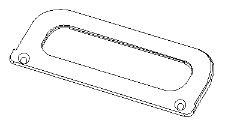

DUT board stiffener handles
Drawing B-E6978-24991
Each DUT board stiffener has two handles (the figure below). The same handles are used on both the small and the large DUT board stiffener. Drawing B-E6978-24991 in Stiffener common parts shows its mechanical dimensions, machining instructions, and tolerances. Attach the handles to the stiffener with M4x8 screws, head type 90° flat Torx. Follow the notes on the drawing's left corner.

Functional changes
- Introduced before SmarTest 6.3.2